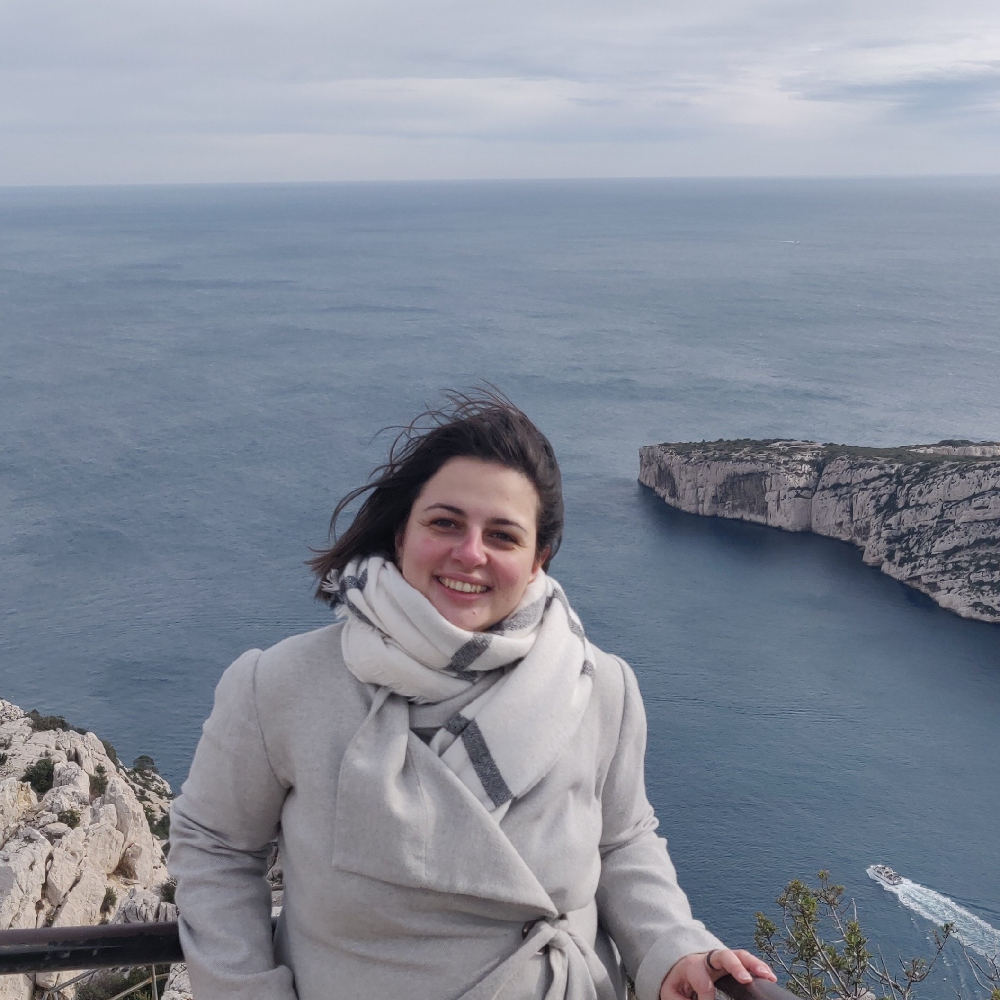

<!-- <div class="jumbotron"> -->
<div class="row marketing">
	<div class="col-sm-4">
		
	</div>
	Hi, I'm Méline Wery, a PhD student in the Dyliss lab (INRIA Rennes). 
	I work on the identification of causal signature of pathology using multi-omics data integration and biological network-based reasoning approach. 
	<!-- <div itemscope itemtype="http://data-vocabulary.org/Person" class="col-sm-8">
		<p class="lead">Hi, I'm <span itemprop="name">Jonathan McGlone</span> and I make things on the web for academic
			libraries and scholarly publishers.</p>
		<p>I get by as a <span itemprop="title">librarian</span>, <span itemprop="title">front end developer</span>,
			<span itemprop="title">UI designer</span>, <span itemprop="title">digital publisher</span>, and music
			enthusiast living in <span itemprop="address" itemscope itemtype="http://data-vocabulary.org/Address"> <span
					itemprop="locality">Plymouth</span>, <span itemprop="region">Michigan</span></span> and working for
			<a href="http://www.publishing.umich.edu">Michigan Publishing</a> at <span itemprop="affiliation">the <a
					href="http://www.lib.umich.edu">University of Michigan Library</a></span>.</p>

		<p>I'm also available for hire as a <span itemprop="title">freelance web developer, designer, or
				consultant</span>. <a href="contact">Drop me a line</a> about your project if you're interested in
			working with me.</p>
	</div> -->
</div>
<!-- </div> -->
